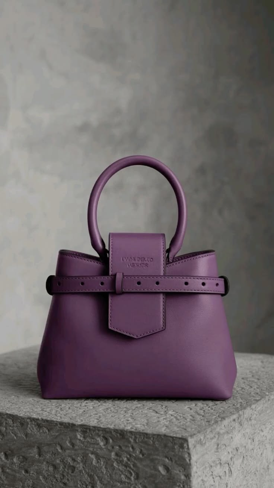
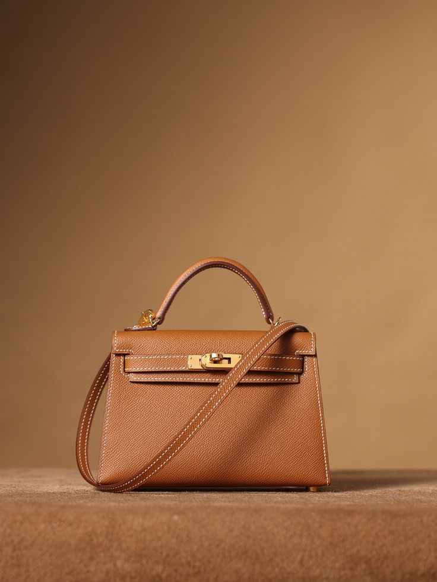
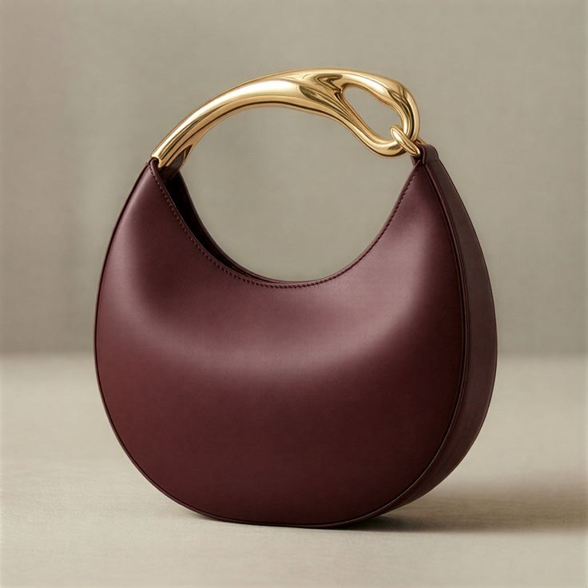
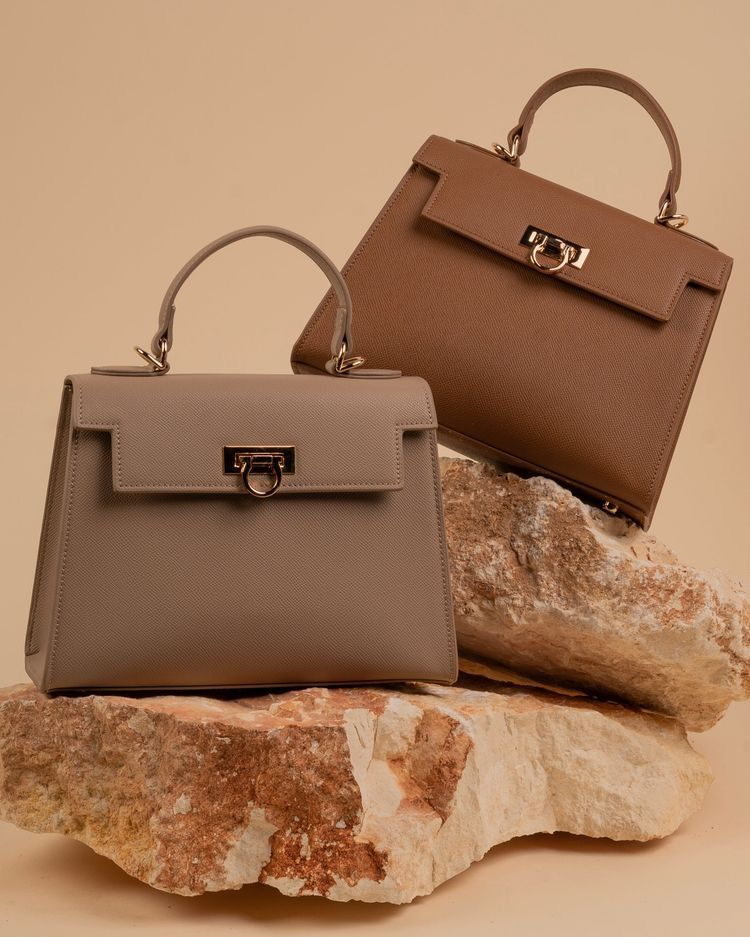

20 000 FCFA

35 000 FCFA

25 000 FCFA

Le sac en cuir est un accessoire de mode incontournable qui allie élégance, praticité et durabilité. Apprécié pour son apparence raffinée et sa texture particulière, il apporte une touche de sophistication à toutes les tenues. Fabriqué à partir de cuir soigneusement travaillé, il se distingue par sa résistance, sa souplesse et la qualité de ses finitions. Qu'il soit porté au quotidien, au travail ou lors d'une occasion spéciale, il permet de transporter facilement les objets essentiels tout en conservant une allure élégante.
Il existe aujourd'hui une grande variété de sacs en cuir, disponibles dans différentes formes, couleurs et dimensions. Certains modèles possèdent plusieurs compartiments permettant de ranger soigneusement les effets personnels, tandis que d'autres privilégient un design minimaliste et épuré. Le cuir peut également présenter différentes textures et finitions, allant du cuir lisse au cuir grainé. Avec le temps, cette matière développe parfois une patine qui lui donne un caractère unique. Bien entretenu, un sac en cuir peut conserver sa beauté pendant de nombreuses années et devenir un véritable indispensable de la garde-robe.